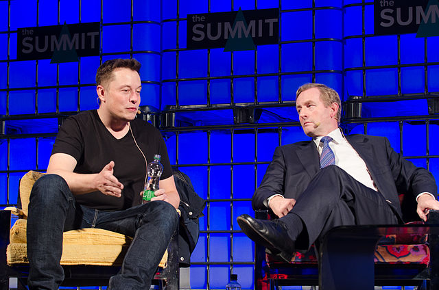

Politically, Musk has described himself as "half Democrat, half Republican" and "I'm somewhere in the middle, socially liberal and fiscally conservative." In 2018, he stated that he was "not a conservative. I'm registered independent politically moderate."Prompted by the emergence of self-driving cars and artificial intelligence, Musk has voiced support for a universal basic income; he additionally backs direct democracy.He has described himself as a socialist, but "not the kind that shifts resources from most productive to least productive, pretending to do good, while actually causing harm" – arguing instead, "true socialism seeks greatest good for all." He supports targeting an inclusive tax rate of 40%, prefers consumption taxes to income taxes, and supports the estate tax, as the "probability of progeny being equally excellent at capital allocation is not high."
Musk has described the United States as "[inarguably] the greatest country that has ever existed on Earth," describing it as "the greatest force for good of any country that's ever been." Musk believes democracy would not exist any longer if not for the United States, saying that it prevented this disappearance on three occasions through its participation in World War I, World War II and the Cold War. Musk also stated that he thinks "it would be a mistake to say the United States is perfect, it certainly is not. There have been many foolish things the United States has done and bad things the United States has done.
Before the election of Donald Trump as President of the United States, Musk criticized candidate Trump by saying: "I feel a bit stronger that he is probably not the right guy. He doesn't seem to have the sort of character that reflects well on the United States." Following Donald Trump's inauguration, Musk expressed approval of Trump's choice of Rex Tillerson as Secretary of State and accepted an invitation to appear on a panel advising President Trump. Regarding his cooperation with Trump, Musk has subsequently commented: "The more voices of reason that the President hears, the better." He subsequently resigned from both in June 2017, in protest at Trump's decision to withdraw the United States from the Paris Agreement on climate change, stating: "Climate change is real. Leaving Paris is not good for America or the world"
In August 2019, Musk came out on Twitter in support of the 2020 Democratic presidential candidate Andrew Yang, whose platform revolves around the ongoing problem of job displacement through technological automation and artificial intelligence. Musk said in a tweet that universal basic income, which Yang supports, is "obviously needed.
In an interview with The Washington Post, Musk stated he was a "significant (though not top-tier) donor to Democrats," but that he also gives heavily to Republicans. Musk further stated that political contributions are a requirement in order to have a voice in the United States government
A 2012 report from the Sunlight Foundation, a nonpartisan group that tracks government spending, found that since 2002, SpaceX had spent more US$4 million on lobbying the United States Congress and more than US$800,000 in political contributions to Democrats and Republicans. The same report said that "SpaceX's campaign to win political support has been systematic and sophisticated," and that "unlike most tech-startups, SpaceX has maintained a significant lobbying presence in Washington almost since day 1." and that "Musk himself has donated roughly US$725,000 to various campaigns since 2002. In 2004, he contributed US$2,000 to President George W. Bush's reelection campaign, maxing out (over US$100,000)to Barack Obama's reelection campaign and donated US$5,000 to Republican Sen. Marco Rubio, who represents Florida, a state critical to the space industry. (...) All told, Musk and SpaceX gave out roughly US$250,000 in the 2012 election cycle."Additionally, SpaceX hired former Republican Senate Majority Leader Trent Lott to represent the company, via the Washington-based lobbying group Patton Boggs LLP. Alongside Patton Boggs LLP, SpaceX uses several other outside lobbying firms, who work with SpaceX's own lobbyists.
Musk has stated that he does not believe the U.S. government should provide subsidies to companies but should instead use a carbon tax to price in the negative externality of air pollution and discourage poor behavior. Musk says that the free market would achieve the best solution, and that producing environmentally unfriendly vehicles should come with its own consequences.
Musk's statements have been widely criticized, with Stanford University Professor Fred Turner noting that "if you're an entrepreneur like Elon Musk, you will take the money where you can get it, but at the same time believe as a matter of faith that it's entrepreneurship and technology that are the sources of social change, not the state. It is not quite self-delusion, but there is a habit of thinking of oneself as a free-standing, independent agent, and of not acknowledging the subsidies that one received. And this goes on all the time in Silicon Valley." Author Michael Shellenberger argued that "in the case of Musk, it is hard not to read that as a kind of defensiveness. And I think there is a business reason for it. They are dealing with a lot of investors for whom subsidies are not the basis for a long-term viable business, and they often want to exaggerate the speed with which they are going to be able to become independent." Shellenberger continues, "we would all be better off if these entrepreneurs were a bit more grateful, a bit more humble." While journalist and author Jim Motavalli, who interviewed Musk for High Voltage, his 2011 book about the electric vehicle industry, speculated that "Elon is now looking at it from the point of view of a winner, and he doesn't want to see other people win because they get government money – I do think there is a tendency of people, once they have succeeded, to want to pull the ladder up after them."